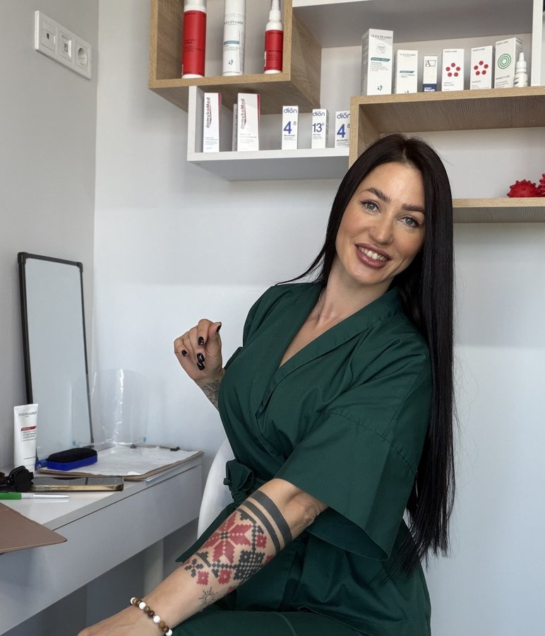
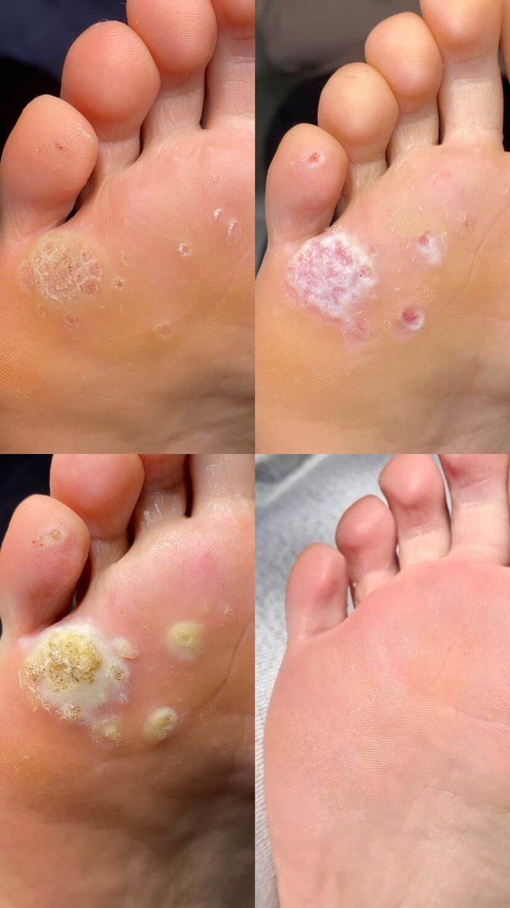
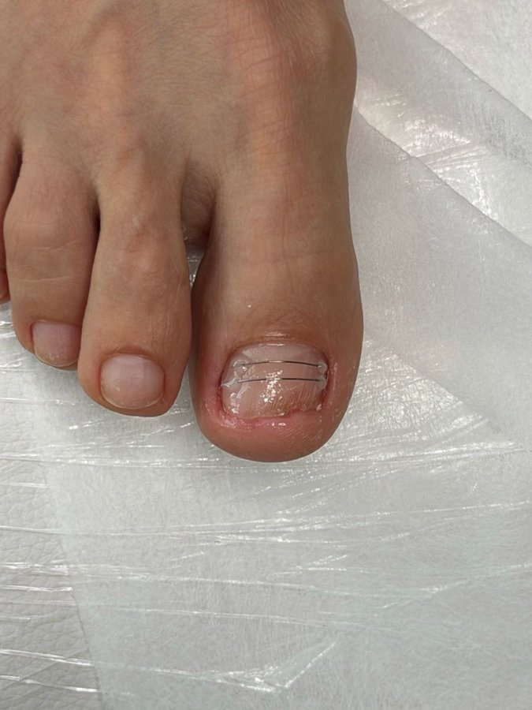
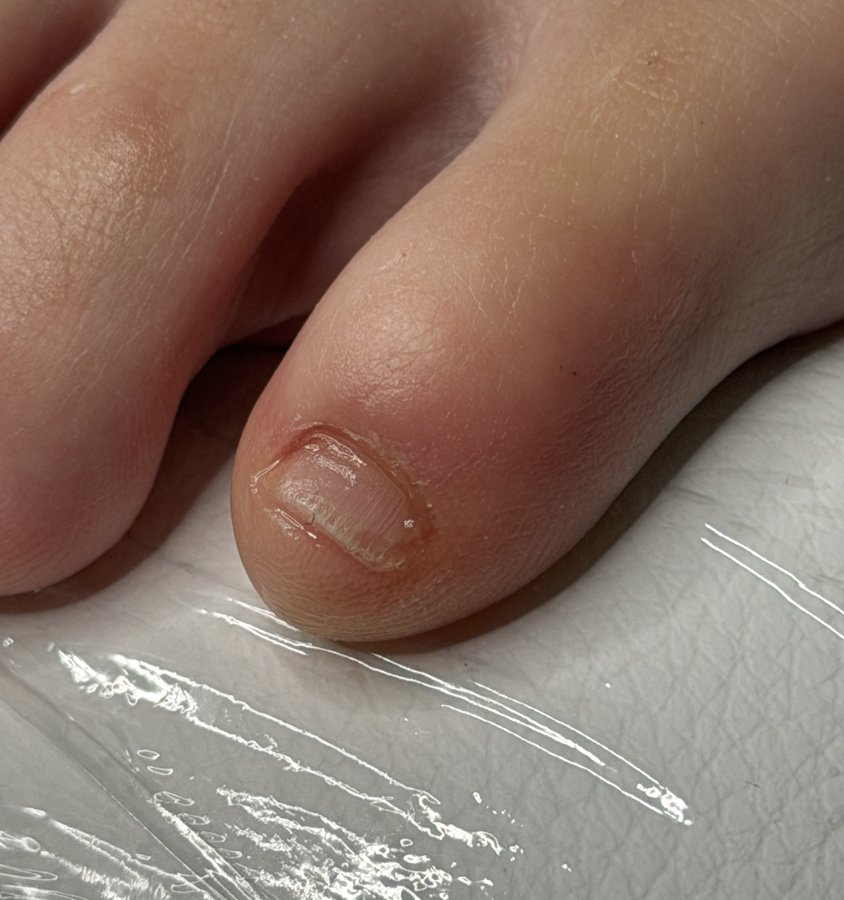
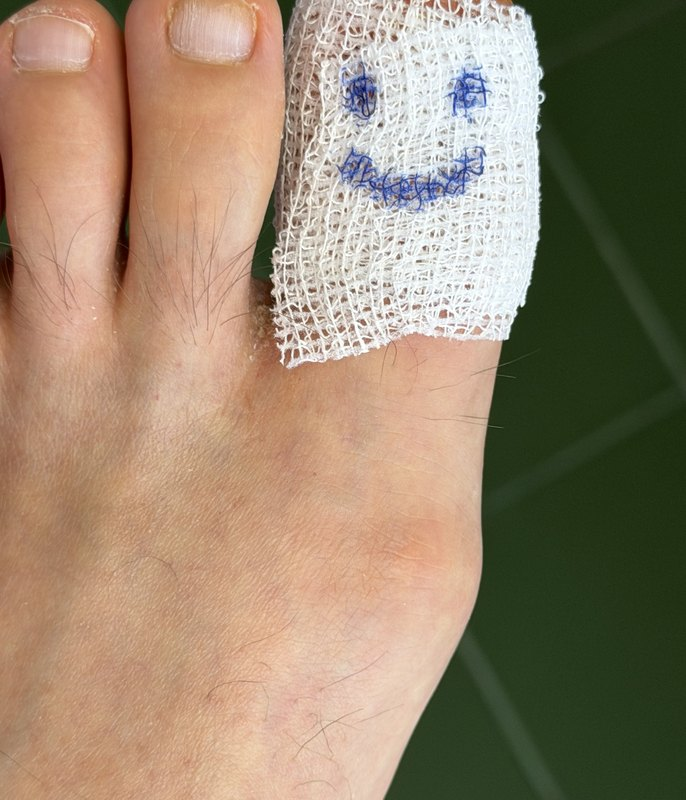
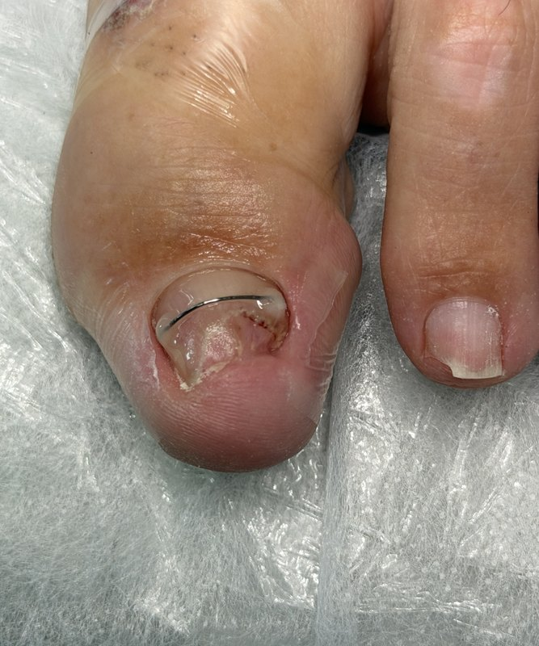
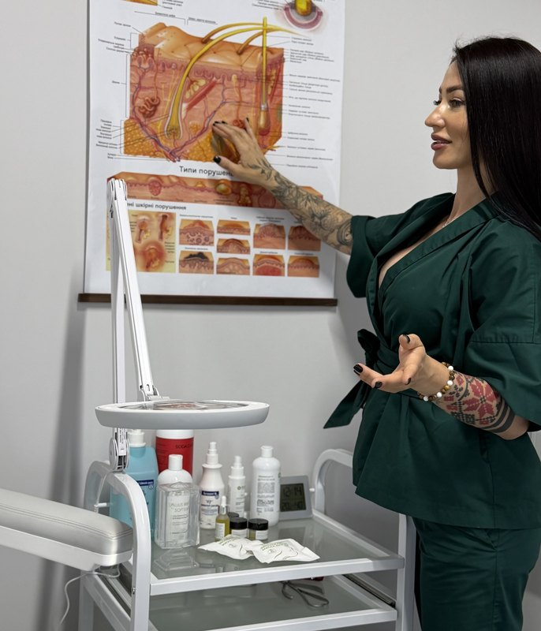
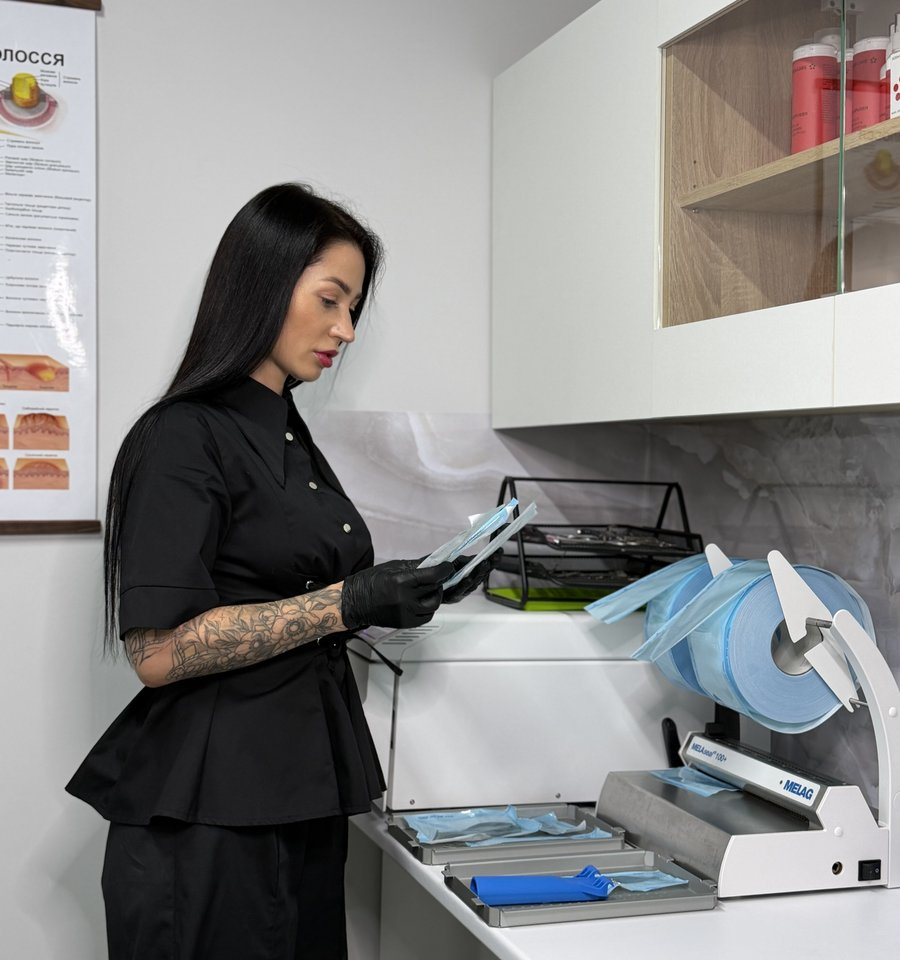
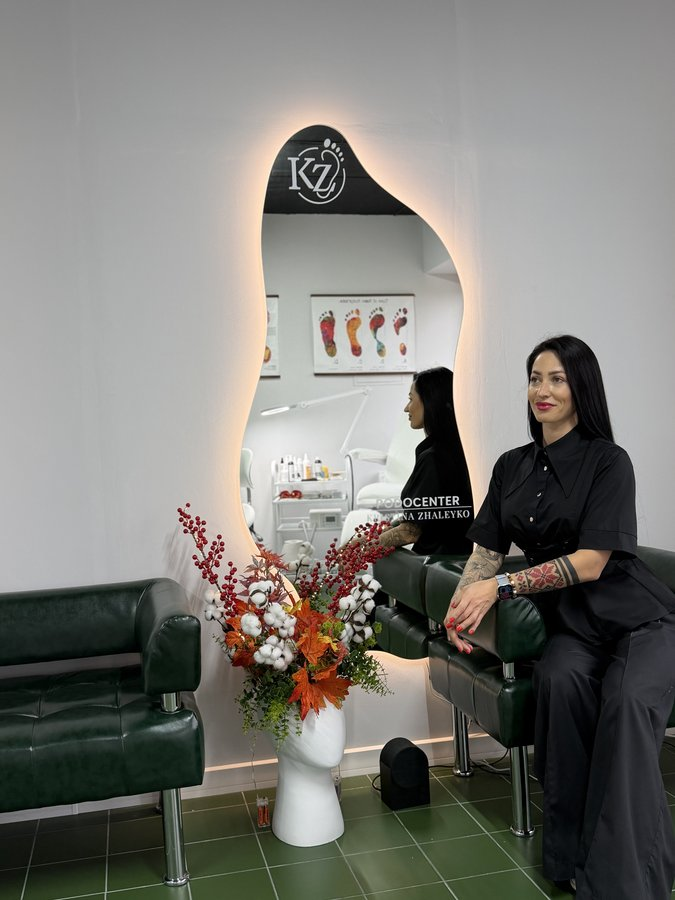

Здорові стопи без болю, страху та хірургічних операцій.
Сертифікований подолог Крістіна Жалейко. 13 років клінічного досвіду, авторські безболісні методики відновлення нігтів, стерильність класу B та індивідуальний підхід у Києві, Ірпені та Словенії.

Чому лікування починається з первинної консультації?
У подології немає універсальних шаблонів. Щоб позбутися проблеми назавжди, ми виявляємо справжню першопричину, а не маскуємо симптоми.
Індивідуальний протокол лікування замість випадкових процедур
На первинному прийомі Крістіна Жалейко проводить детальний огляд стопи, аналізує стан шкіри та нігтів, визначає біомеханіку навантаження і тільки після цього призначає точний, безпечний план відновлення.
Діагностика та дерматоскопія
Візуальне дослідження нігтьової пластини, валиків та шкіри стопи. Збір детального анамнезу способу життя та взуття.
Оцінка біомеханіки ходи
Аналіз точок надмірного тиску на пальці та п'яти, що провокують утворення мозолів, стрижнів або вростання нігтів.
Підбір безболісного методу
Вибір корекційної системи (титанова нитка, метод Arkada), терапії оніхолізису або апаратного педикюру без розрізів.
Домашній догляд & супровід
Призначення сертифікованої космецевтики для швидкої регенерації та супровід лікаря до повного одужання.
Медичний догляд та терапія патологій стопи
Повний спектр подологічної допомоги: від профілактичного гігієнічного педикюру до складних випадків деформацій нігтів.
Безопераційна корекція врослого нігтя
Купірування гострого болю в день звернення. Встановлення корекційних систем (титанова нитка, скоби, авторський метод Arkada) без видалення нігтьової пластини.
Лікування оніхолізису та дистрофій
Апаратна безпечна зачистка порожнин під нігтьовою пластиною, усунення нестабільного кератину та стимуляція прикріплення нігтя до ложа.
Медичний апаратний педикюр
Комплексна обробка стоп і нігтів за сухим медичним протоколом без розпарювання. Очищення гіперкератозу, обробка пальців та кутикули.
Терапія підошовних бородавок
Атравматична методика усунення вірусних бородавок (папілом) без глибокого випалювання, рубцювання та випадання з робочого графіка.
Видалення мозолів та тріщин
Висвердлювання стрижневих мозолів спеціальними фрезами, апаратне закриття глибоких тріщин п'ят із накладанням лікувальних розвантажувальних пов'язок.
Індивідуальні ортози та розвантаження
Виготовлення анатомічних силіконових міжпальцевих коректорів для зняття тиску з деформованих суглобів, захист від повторного натирання.
Реальні клінічні випадки: результати лікування
Кожен випадок супроводжується персональним протоколом. Нижче наведено реальні фотографії пацієнтів з практики Крістіни Жалейко.

Повне відновлення епідермісу без рубців
Пацієнт з множинними болісними папіломами на стопі. Проведено щадну подологічну деструкцію без глибокого опіку тканин. Шкіра повністю відновила природний малюнок.

Безопераційна корекція титановою скобою
Хронічне вростання бічного краю нігтьової пластини з регулярним запаленням валика. Встановлено титанову систему для плавного розгинання арки нігтя.

Повне прикріплення нігтя до нігтьового ложа
Глибоке відшарування пластини після термічного опіку в лампі. Проведено апаратну зачистку нестабільних зон, стимуляцію ложа краплями та регенерацію.

Акуратна обробка та психологічний комфорт
Купірування піднігтьової гематоми та накладання захисної атравматичної пов'язки. Повний захист від занесення інфекції та зняття страху перед маніпуляціями.

Вирівнювання арки нігтя та захист куточків
Запобігання повторному вростанню після невдалого педикюру. Плавне підняття країв нігтя без дискомфорту при носінні закритого повсякденного взуття.

Силіконовий ортоз для розвантаження міжпальцевого простору
Усунення хронічного тертя та утворення міжпальцевих мозолів. Виготовляється за індивідуальною геометрією стопи пацієнта за 15 хвилин.
Стерильність 100% за нормами СанПіН
У кабінеті PODO.MEDIC діють найсуворіші медичні протоколи стерилізації. Кожен пацієнт гарантовано захищений від бактеріальних, вірусних та грибкових інфекцій.
Дезінфекція в ультразвуковій ванні
Занурення інструментів у сертифікований дезінфікуючий розчин для повного знищення патогенної мікрофлори.
Передстерилізаційне очищення (ПСО)
Ретельне механічне промивання інструменту та апаратна сушка перед герметичним пакуванням.
Пакування в одноразові крафт-пакети
Кожен набір герметично запаюється в індивідуальний пакет із термохімічним індикатором стерильності 4-го класу.
Стерилізація в автоклаві Melag класу B
Обробка парою під високим тиском (134 °C). Пакет відкривається виключно в присутності пацієнта на початку процедури.


Крістіна Жалейко: 13 років клінічного досвіду
Я практикуючим подологом з 2013 року. За цей час допомогла понад 5000 пацієнтам забути про біль у стопах, позбутися хронічних мозолів та повернути красу нігтів без операційного втручання хірургів.
Є офіційним сертифікованим інструктором інноваційної польської методики Arkada в Україні. Постійно підвищую кваліфікацію в Європі та ділюся знаннями на власних авторських курсах.
Що кажуть люди після нашого лікування
Оцінка 5.0 на сервісі онлайн-запису APNT та сотні теплих відгуків в Instagram @podo.medic.
«Мучилась із врослим нігтем більше року, боялася хірургів, бо казали зірвати ніготь. Потрапила до Крістіни - біль зник буквально під час процедури! Встановили корекційну скобу, ніготь відріс ідеально рівний. Безмежно вдячна за професіоналізм та турботу!»
«Після гель-лаку нігті на руках почали відшаровуватись, дерматологи призначали лише мазі без результату. Крістіна провела правильну апаратну зачистку оніхолізису, призначила краплі, і через 2.5 місяці в мене виросли повністю здорові пластини. Найкращий подолог!»
«Привів маму з діабетичною стопою та дуже глибокими тріщинами на п'ятах, вона ледве ходила. Крістіна настільки делікатно все обробила, зробила лікувальні пов'язки, дала рекомендації щодо догляду. Мама тепер бігає як у молодості. Дякую за золоті руки!»

Чекаємо на вас у Києві та Ірпені
Оберіть зручну для вас локацію та запишіться на прийом у кілька кліків через систему онлайн-бронювання.
м. Київ (Оболонь)
📍 Адреса: Оболонська набережна, 3
Зручний під'їзд, паркінг біля входу, комфортна зона очікування з кавою.
м. Ірпінь
📍 Адреса: вул. Григорія Сковороди, 11/3
Сучасне обладнання, повний цикл стерилізації, прийом дорослих та дітей.